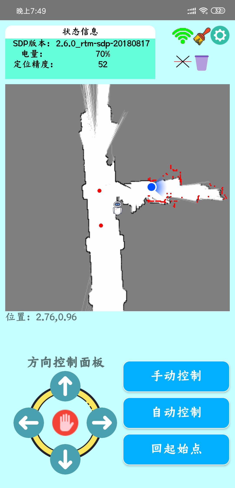

-
圆月行

- 圆月行是一款主打社交和出行的游戏性质社交app，产品的定义是为了减少人们对于社交的室内依赖性，能够把社交属性从室内带到室外，直到2019年4月发现母公司腾讯发布了一款叫做一起来捉妖的游戏，两者产品定义几近相同，代码量30000+余行，属于个人独立开发的大中型app。
- Android Try it
-
行走机器人控制台
- 控制台的意义是实现在手机端对行走机器人的功能设计，主要功能实现有巡航定位，自主执行，手动控制，建图存图，地图擦出，上层保护等，这是第一个接手的商业产品项目，历时三个月，安卓开发端仅我一人负责，过程中的困难和疲惫不言而喻，也经历了和boss思维交流的过程，是我第二次蜕变的开端。
- Android + 物联芯片 Sorry, this project is privary